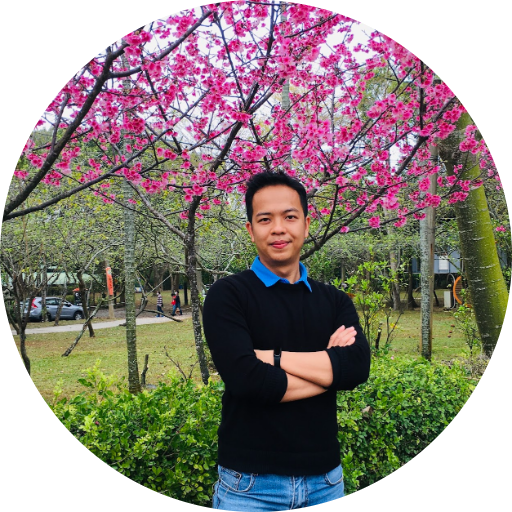

Cyber Information Security (CIS) Lab
網路資安實驗室
EA 301B, CSIE, CCU, Chiayi, Taiwan
Welcom to Cyber Information Security Laboratory (CIS Lab)
News
2026/1: Our papers (3) are accepted to appear in IEEE ICC 2026, Glasgow, UK. Congrats to the team.
2026/1: Our papers (2) are accepted to appear in IEEE WCNC 2026, Kuala Lumpur, Malaysia. Congrats to the team.
2025/8: Our papers are accepted to appear in IEEE GLOBECOM 2025, Taipei, Taiwan. Congrats to the team.
2025/4: Our workshop proposal on quantum ML has been accepted to be organized at IEEE GLOBECOM 2025, Taipei.
2025/4: Our paper has been accepted to appear in IEEE TGCN. Congrats to Yared and the team.
2025/3: Our paper has been accepted to appear in Signal, Image, and Video Processing (Springer Nature). Congrats to Duy and the team.
2025/1: Our paper has been accepted to appear in IEEE ICC 2025, Montreal, Canada. Congrats, Quang Nguyen, Khanh, and the team.
Recruiting talents!
-
Our lab still has vacancies for self-motivated Ph.D. students in Spring 2026/Fall 2026!
-
If you are interested in Cybersecurity/Wireless communications/Vehicular/Quantum networks and AI for those, please contact us!
#Physical-Layer-Security #Adversarial-attacks #DDoS-Defense #Quantum-Security
CIS Lab is a young security research group in National Chung Cheng University established by Prof. Van-Linh Nguyen. Students are diverse and come from many countries, e.g., Taiwan, Vietnam, Thailand, Malaysia, Ethiopia, Iran, and India. Our research interests consists of Information Security/Advanced authentication, Cybersecurity in wireless communications, space/drone security, quantum security, and vehicular networks.
Some Typical Research Topics
Something may be good
Never give up, for that is just WHEN it is your turn and HOW good you pursue your goals
If now is not the time to do, when? why? Never give an excuse for your fail without asking why?
Working style
Happiness and Fairness
1Responsibility
2Self-motivation
3Lab members
Head of the lab: Van-Linh Nguyen (阮文齡)

- Address CSIE, CoE, National Chung Cheng University, Chiayi, 621301, Taiwan
-
e-mail
nvlinh (at) cs.ccu.edu.tw or tuonglinhhm (at) gmail.com
Due to potential system errors, when you send an email to nvlinh (at) cs.ccu.edu.tw, you can cc to my Gmail tuonglinhhm (at) gmail.com too
- Phone +886-5-2720411, ext 33140
- Personal website https://sites.google.com/view/nvlinh
Ph.D students (博士班)
| Year enter | Name | Research field | Graduation | Notable achievement | |
|---|---|---|---|---|---|
| Fall 2025 | PK-汗穆瓦 Muhammad Wasif Khan | mwk1307(at)gmail.com | O-RAN/Spectrum sharing/RIS | ||
| Fall 2025 | PK-沙伊塞 Syed Imran Hussain Shah | syed.imranhussain1252(at)gmail.com | Blockchain/Cybersecurity | ||
| Fall 2024 | TH-謝永強 Jirapon Sa-Ingthong | jirapon.sai(at)ku.th | ISAC | ||
| Spring 2023 | ET-亞里德 (Yared) | yared3778 (at) gmail.com | Safe DRL | ICC 2024, TVT, TGCN, ICMLCN 2025, ICC 2025, WCNC 2026 | |
| Fall 2022-Spring 2025 | VN-黃文心 (Tam) | tamdhkhtn (at) gmail.com | Adversarial attacks | TCCN, ICC 2025 |
Master Students (碩士班)
| Year enter | Name | Research field | Graduation | Achievement | |
|---|---|---|---|---|---|
| Fall 2025 |
吳飛揚 Aditya Nugraha Putra | INTENSE | |||
| Fall 2025 |
曾宇敍 | Wireless security | |||
| Fall 2025 |
周宸瑋 | Malware Detection | |||
| Fall 2025 |
陳士弘 | Smart manufacturing | |||
| Fall 2025 |
梁有辰 | Malware detection | |||
| Fall 2025 |
太伍隆 Long Vu Thai | Semantic communication security | |||
| Fall 2025 |
陳格愷 Khanh Cat Tran | Blockchain/Fintech | |||
| Fall 2025 |
阮得汶 Nguyen Van Duc | Post-quantum Cryptography | |||
| Spring 2025 |
阮海宇 Vu-Hai Nguyen | Quantum ML | ICC 2026 | ||
| Spring 2025 |
阮天東 Tien-Dung Nguyen | Wireless Sensing | 2xICC 2026 | ||
| Spring 2025 |
鄧文明 Van-Minh Dam | O-RAN/Load balancing | |||
| Fall 2024 |
王子衡 | peter3929293@gmail.com | Cybersecurity | ||
| Fall 2024 |
圖克珊 Tuksaporn Tubkerd | nxne2307@gmail.com | INTENSE | ||
| Spring 2024 |
VN-Quan | tranquan687(at)gmail.com | Computer Vision | ICIP 2025, SIGv 2025, VTC 2024 | |
| Fall 2023 |
L-鄭洛旻(Lo-Ming) | otsy2048(at)gmail.com | Signal tracking | S | |
| Fall 2023 |
L-黃泰源 (Terry) | th04e22 (at) gmail.com | Few-Shot Learning/Generative DL | Transfered | |
| Fall 2023 |
L-張森崴 (Peter) | kantt123petter (at) gmail.com | Online DDoS Defense | Transfered | |
| Fall 2023 |
TH-蕭智泓 (Nattapol) | satang040920.tw(at)gmail.com | Attacks/DoS | Spring 2025 | ICC 2024 |
| Fall 2022 | L-邱昱智 (Yu-Zhi) | tont12345646(at)gmail.com | Adversarial attacks | Fall 2024 | |
| Fall 2022 | L-吳奕平 (Yi-Ping) | k94077087(at)gmail.com | Adversarial attacks | Fall 2024 | |
| Fall 2022 | L-劉祐豪 (Derrick) | derrickliou1(at)gmail.com | UAV/LEO | Fall 2024 | ICACT 2023, ICC 2024 |
| Fall 2022 | L-梁鴻文 (Mike) | mich803040(at)gmail.com | Active sensing | Fall 2024 | MILCOM 2023, CITA 2024 |
| Fall 2022 | L-吳法川 (Fa-Chun) | j6z83tj0(at)icloud.com | Deep Fake | Fall 2024 | |
| Fall 2022 | L-蔡皓評(Hao-Ping) | cstsaitsaiyo(at)gmail.com | DDoS | Fall 2024 | GLOBECOM 2023, ICC 2024 |
Undergraduate Students (學士班)
| Year enter | Name | Research field | Graduation | Achievement | |
|---|---|---|---|---|---|
| Fall 2024 | L-宋翊慈 | Blockchain | |||
| Fall 2024 | L-賴奕岑 | Smart contract | |||
| Fall 2023 | L-劉文賓 (Wen-Pin Liu) | yoyo6112763 (at) gmail.com | EV-Path | IEEE VTC 2024 | |
| Fall 2023 | L-胡烜彰(Xuan-Zhang Hu) | dodo920118 (at) gmail.com | EV-Path | IEEE VTC 2024 | |
| Fall 2023 | L-陳聖旻(Sheng-Min) | samn91024 (at) gmail.com | MIL-UAV | IEEE VTC 2024 | Fall 2023 | L-丁晧恩(Ting Hao-En) | tinghaoen (at) gmail.com | MIL-UAV | IEEE VTC 2024, IV 2024 |
| Fall 2022 | L-羅政傑 (Cheng-Jie) | jackson.loa1(at)gmail.com | CBS1 | ||
| Fall 2022 | L-盧林翼 (Lin-Yi) | titan90280(at)gmail.com | CBS1 | ||
| Fall 2022 | MY-王鴻鈞 (Harry) | harrywonghungjun(at)gmail.com | CBS2 | Master in Australia | ICC 2023, GLOBECOM 2023 |
| Fall 2022 | L-林煜家 (Yu-Chia, Jack) | aaaee9104(at)gmail.com | CBS2 | ICC 2023, GLOBECOM 2023 | |
| Fall 2022 | L-陳泓奕 (Hong-Yi) | enderjacky96285(at)gmail.com | CBS3 | Master in NYCU | GLOBECOM 2023 |
| Fall 2022 | L-王彥皓 (Yan-Hao) | bses30074(at)gmail.com | CBS3 | Master in NCU | GLOBECOM 2023 |
| Spring 2023 | MA-Tarik Kaoutar | mr.tarik098 (at) gmail.com | CBS4 |
Internship Students
| Period | Name | Nationality | Program |
|---|---|---|---|
| May-Aug 2023 | Quan Tran Dinh Dai (UP) | Maths, Ho Chi Minh City University of Education, Vietnam | TEEP 2023 |
| May-Aug 2023 | Punn Kiriwong | CS, King Mongkut's University of Technology Thonburi (KMUTT), Thailand | TEEP 2023 |
| June-Sep 2023 | Behrad Ahmadpour | CS, Sharif University of Technology, Iran | TEEP 2023 |
| July-Nov 2023 | Akkapatch Thouchamongkol | Robotics & AI Engineering, King Mongkut's Institute of Technology Ladkrabang (KMITL), Thailand |
TEEP 2023 |
| Oct-Dec 2023 | Thinh Ba Lam | Information Technology, VNU-University of Science, Vietnam | IIPP 2023 |
| Dec 2023 - Jan 2024 | Avnish Pandey | Indian Institute Of Technology–Jammu (IIT–Jammu), India | IIPP 2023 |
| Mar 2024 - Aug 2024 | Jirapon Sa-Ingthong | Kasetsart University, Thailand | TEEP 2024 |
| Mar 2024 - May 2024 | Worakorn Koonawootrittriron | Kasetsart University, Thailand | TEEP 2024 |
| May 2024 - June 2024 | Chanatnan Tanmathusorachai | King Mongkut's Institute of Technology Ladkrabang (KMITL), Thailand | TEEP 2024 |
Topics
| #Code | Topic name | Restricted Resources |
|---|---|---|
| CBS1 | Vehicular security and defense (Adversarial attacks, Safe DRL, Misbehavior Detection, Autonomous vehicles, Aerial-assisted vehicular networks) |
Access here |
| CBS2 | Physical layer security (Blind intrusion, Signal surveillance, Moving into Dark building) |
Access here |
| CBS3 | Generative AI-based DDoS defense mechanisms for Imperfect and non-IID Data (Self-supervised Learning, autoDL, DDoS in IIoT networks, DDoS in Intelligent Transportation Systems) |
Access here |
| CBS4 | Blockchain and Quantum security (Blockchain for 6G networks/6G V2X, Quantum-safe Networks) |
Access here |
Publication
Google Scholar, DBLP, Web of Science (WoS)
Publications: * indicates the corresponding author, ^ denotes my students (or my co-advised/internship students)
Journal papers (33)
Van-Linh Nguyen*, Lan-Huong Nguyen, Ren-Hung Hwang, "MUFO: Multi-UAV Flight Optimization for Enhancing Connectivity in Remote Driving Services", Ad-hoc Networks, Volume 183, 15 March 2026. (SCI/SCIE, Q1)
Khanh-Duy Cao-Phan^, Quan Tran Dinh Dai^, Van-Linh Nguyen*, "VDD: Voice Deepfake Detection with Three-Channel Acoustic Representations and Advanced Split-Attention Networks", Signal, Image, and Video Processing (Springer Nature), Volume 19, article number 537, 2025.
(COMSTD), Van-Linh Nguyen*, Lan-Huong Nguyen, Ren-Hung Hwang, Berk Canberk, Trung Q. Duong, "Quantum Machine Learning for 6G Network Intelligence and Adversarial Threats", IEEE Communications Standards Magazine, vol. 9, no. 3, pp. 40-48, Sept. 2025.
(TGCN), Yared Abera Ergu^, Van-Linh Nguyen*, "RADAR: Robust DRL-based Resource Allocation Against Adversarial Attacks in Intelligent O-RAN", IEEE Transactions on Green Communications and Networking, vol. 9, no. 4, pp. 2305-2318, Dec. 2025
(ICMLCN) Son Dinh-Van, Van-Linh Nguyen, Berna Bulut Cebecioglu, Antonio Masaracchia, and Matthew D. Higgins "Reinforcement Learning with Selective Exploration for Interference Management in MmWave Networks ", IEEE Transactions on Machine Learning in Communications and Networking, vol 3, 2025.
(TCCN) Van-Tam Hoang^, Van-Linh Nguyen*, Rong-Guey Chang, Po-Ching Lin, Ren-Hung Hwang, and Trung Q. Duong "Adversarial Attacks Against Shared Knowledge Interpretation in Semantic Communications", IEEE Transactions on Cognitive Communications and Networking, vol. 11, no. 2, pp. 1024-1040, April 2025, (SCI/SCIE, Q1).
(COMST), Lan-Huong Nguyen, Van-Linh Nguyen, Ren-Hung Hwang, Jian-Jhih Kuo, Yu-Wen Chen, Chien-Chung Huang, Ping-I Pan, "Towards Secured Smart Grids 2.0: Exploring Security Threats, Protection Models, and Challenges", IEEE Communications Surveys and Tutorials, vol. 27, no. 4, pp. 2581-2620, Aug. 2025, (SCI/SCIE, Q1, IF: ~46.7).
(TVT) Yared Abera Ergu^, Van-Linh Nguyen*, Ren-Hung Hwang, Ying-Dar Lin, Chuan-Yu Cho, Hui-Kuo Yang, Hyundong Shin, Trung Q. Duong, "Efficient Adversarial Attacks against DRL-based Resource Allocation in Intelligent O-RAN for V2X", IEEE Transactions on Vehicular Technology, vol. 74, no. 1, pp. 1674-1686, Jan. 2025, (SCI/SCIE, Q1).
(TCCN) Lal Verda Cakir, Craig J. Thomson, Mehmet Ozdem, Berk Canberk, Van-Linh Nguyen, and Trung Q. Duong, "Intelligent Digital Twin Communication Framework for Addressing Accuracy and Timeliness Tradeoff in Resource-Constrained Networks", IEEE Transactions on Cognitive Communications and Networking, 2025, Vol 11, No 3, (SCI/SCIE, Q1).
(JNCA) Van-Tam Hoang^, Yared Abera Ergu^, Van-Linh Nguyen*, and Rong-Guey Chang, "Security Risks and Countermeasures of Adversarial Attacks on AI-driven Applications in 6G Networks: A Survey", Journal of Network and Computer Applications (Elsevier), Vol. 232, 2024, (SCI/SCIE, Q1) (Citation:10)
(IoTJ) Van-Linh Nguyen*, Hao-Ping Tsai^, H. Shin, Trung Q. Duong, "Spatial Data Transformation and Vision Learning for Elevating Intrusion Detection in IoT Networks", IEEE Internet of Things Journal, vol. 11, no. 24, pp. 41261-41272, 2024 (SCI/SCIE, IF: 10.2, Q1).
(COMSTD) A.Masaracchia, Van-Linh Nguyen, D. B. Costa, E. Ak, B. Canberk, V. Sharma, and Trung Q. Duong, "Towards 6G-enabled URLLCs: Digital Twin, Open RAN, and Semantic Communications," IEEE Communications Standards Magazine, vol. 9, no. 1, pp. 13-20, March 2025 (SCI/SCIE, Q1).
(SJ), Yijiu Li, Dang Van Huynh, Van-Linh Nguyen, Dac-Binh Ha, Hans-Jurgen Zepernick, and Trung Q. Duong, "Multi-Agent UAV-aided URLLC Mobile Edge Computing Systems: A Joint Communication and Computation Optimisation Approach", IEEE Systems Journal, vol. 73, no. 6, pp. 8782-8796, June 2024 (SCI/SCIE, Q1).
(TVT) Van-Linh Nguyen, Lan-Huong Nguyen, Jian-Jhih Kuo, Po-Ching Lin, and Ren-Hung Hwang, "Intelligent Aerial Relay Deployment for Enhancing Connectivity in Emergency Communications", IEEE Transactions on Vehicular Technology, Vol. 73, No. 6, pp. 8782 - 8796, 2024, (SCI/SCIE, Q1, Top #2 journal in Transportation Science & Technology).
(COMML) S. Sweta^, Ankit Dubey, Van-Linh Nguyen, “Efficient IRS-aided Rate Optimizations for Dual Functional Radar and Communications”, Vol. 28, No. 1, pp. 39 - 42, IEEE Communications Letters, 2024 (SCI/SCIE, Q1)
(COMMAG) Van-Linh Nguyen*, Ren-Hung Hwang, Bo-Chao Cheng, Ying-Dar Lin, Trung Q. Duong, “Understanding the Privacy Risks of High-accuracy Radio Positioning and Sensing in Wireless Networks”, IEEE Communications Magazine, Vol. 62, No. 5, pp. 104 - 111, 2024, (SCI/SCIE, Q1, Top IEEE journal in Telecommunications).
(NETWORK) Van-Linh Nguyen, Ren-Hung Hwang, Po-Ching Lin, Abhishek Vyas^, Van-Tao Nguyen, "Towards the Age of Intelligent Vehicular Networks for Connected and Autonomous Vehicles in 6G", Vol. 37, No. 3, pp. 44 - 51, IEEE Network, 2023, (SCI/SCIE, Q1, Top IEEE journal in Telecommunications) (Citation: 51)
(JISA) Ying-Dar Lin, Ze-Yu Wang^, Po-Ching Lin, Van-Linh Nguyen, Ren-Hung Hwang and Yuan-Cheng Lai, “Multi-datasource Machine Learning in Intrusion Detection: Packet Flows, System Logs and Host Statistics”, Journal of Information Security and Applications (Elsevier), 2022, (SCI/SCIE, Q1) (Citation: 18)
Lan-Huong Nguyen^, Van-Linh Nguyen, and Jian-Jhih Kuo, “Efficient Reinforcement Learning-based Transmission Control for Mitigating Channel Congestion in 5G V2X Sidelink, IEEE Access, Vol. 10., 2022. (SCIE, Q1). (Citation: 21)
Ying-Dar Lin, Zi-Qiang Liu^, Ren-Hung Hwang, Van-Linh Nguyen, Po-Ching Lin, Yuan-Cheng Lai, “Machine Learning with Variational AutoEncoder for Imbalanced Datasets in Intrusion Detection”, IEEE Access, Vol. 10, 2022. (SCIE, Q1) (Citation: 34)
(S&P) Edy Kristianto^, Van-Linh Nguyen*, and Po-Ching Lin, “Decentralized PKI with Blockchain in V2X Communications: Promising or only Euphoria?”, Vol. 20, No. 4, pp. 40 - 50, IEEE Security & Privacy, 2022, [SCI/SCIE, Q1)
Lan-Huong Nguyen^, Van-Linh Nguyen, and Jian-Jhih Kuo, “Risk-based Transmission Control for mitigating Network Congestion in Vehicle-to-Everything Communications", IEEE Access, vol. 9, pp. 144469-144480, 2021. (SCI/SCIE, Q1)
(T-ITS) Van-Linh Nguyen, Ren-Hung Hwang, and Po-Ching Lin, "Controllable path planning and traffic scheduling for emergency services in the Internet of Vehicles,", IEEE Transactions on Intelligent Transportation Systems, Vol. 23, No. 8, pp. 12399 - 12413, 2022, (SCI/SCIE, Q1, Top #1 SCI journal in Transportation Science & Technology). (Citation: 43)
(JNCA) Huu-Khoi Bui^, Ying-Dar Lin, Ren-Hung Hwang, Po-Ching Lin, Van-Linh Nguyen, and Yuan-Cheng Lai, "CREME: A toolchain of automatic dataset collection for machine learning in intrusion detection", Journal of Network and Computer Applications, Vol. 193, 2021 (SCI/SCIE, Q1, in Computer Science). (Citation: 26)
(COMST) Van-Linh Nguyen, Po-Ching Lin, Bo-Chao Cheng, Ren-Hung Hwang, Ying-Dar Lin "Security and privacy for 6G: A survey on prospective technologies and challenges", IEEE Communications Surveys and Tutorials, Vol. 23, No. 6, 2021 (SCI/SCIE, Q1, the highest impact factor journal in all IEEE publications). (Citation: 425).
Van-Linh Nguyen, Po-Ching Lin, Ren-Hung Hwang, "A Beamforming Signal-Based Verification Scheme for Data Sharing in 5G Vehicular Networks", IEEE Access, Vol. 8, 2020 [SCI/SCIE] (SCI/SCIE, Q1).
(TVT) Van-Linh Nguyen, Po-Ching Lin, and Ren-Hung Hwang, "Enhancing Misbehavior Detection in 5G Vehicle-to-Vehicle Communications", IEEE Transactions on Vehicular Technology, Vol. 69, No. 9, 9417-9430, 2020, [SCI/SCIE] (SCI/SCIE, Q1, Top #2 journal in Transportation Science & Technology) (Citation: 64).
Ren-Hung Hwang, Min-Chun Peng^, Chien-Wei Huang^, Po-Ching Lin, and Van-Linh Nguyen*, “An unsupervised deep learning model for early network traffic anomaly detection", IEEE Access, Vol. 8, 2020, (SCI/SCIE, Q1, in Computer Science and Information Systems). (Citation: 265).
Ren-Hung Hwang, Min-Chun Peng^, Van-Linh Nguyen, and Yu-Lun Chang^, “An LSTM-Based Deep Learning Approach for Classifying Malicious Traffic at the Packet Level", Applied Sciences, Vol. 9, No. 16, pp. 3414, 2019, (SCI/SCIE, Q2) (Citation: 177).
(COMML) Van-Linh Nguyen, Po-Ching Lin, and Ren-Hung Hwang, “Multi-array relative positioning for verifying the truthfulness of V2X messages”, IEEE Communications Letters, Vol. 23, No. 10, pp. 1704-1707, 2019, (SCI/SCIE, Q1)
Van-Linh Nguyen, Po-Ching Lin, and Ren-Hung Hwang, "Web Attacks: beating monetisation attempts", Network Security Journal (Elsevier), No.5, 2019. (Scopus), (SCI/SCIE, Q2)
Van-Linh Nguyen, Po-Ching Lin, and Ren-Hung Hwang (2019, Apr), "Energy depletion attacks in Low Power Wireless networks", IEEE Access, Vol. 7, pp. 51915- 51932, 2019, [SCI/SCIE] (SCI/SCIE, Q1). (Citation: 93).
(NETWORK) Van-Linh Nguyen, Po-Ching Lin, and Ren-Hung Hwang, "MECPASS: Distributed Denial of Service Defense Architecture for Mobile Networks", IEEE Network, Vol. 32, No. 1, pp. 118-124, 2018, (SCI/SCIE, Q1, Top #3 journal in Telecommunications) (Citation:23).
Conference papers (38) ^ denotes my students (co-advised students)
[ICC' 26] Tien-Dung Nguyen^, Ngoc-Son Duong^, Jen-Yi Pan, Van-Linh Nguyen, ”DualSense: WiFi Sensing and Segmentation of Signal Scatterers For Object Reconstruction“, 2026 IEEE International Conference on Communications Conference, Glasgow, UK.
[ICC' 26] Vu-Hai Nguyen^, Yared Ergu^, Ren-Hung Hwang, Trung Q. Duong, Van-Linh Nguyen, ”Efficient Quantum Soft Actor-Critic Model for Dynamic Spectrum Sharing in Intelligent O-RAN“, 2026 IEEE International Conference on Communications Conference, Glasgow, UK.
[ICC' 26] Tien-Dung Nguyen^, Van-Linh Nguyen, ”Hybrid Transformer-based Learning For Enhancing Malware Detection in Cloud-Based Services“, 2026 IEEE International Conference on Communications Conference, Glasgow, UK.
[WCNC' 26] Lan-Huong Nguyen^, Van-Linh Nguyen, Ren-Hung Hwang, ”HQ-CNN: Hybrid Quantum-CNN for Precise Radio-Based Indoor Tracking in mmWave Networks “, 2026 IEEE Wireless Communications and Networking Conference, Kuala Lumpur, Malaysia.
[WCNC' 26] Yared Ergu^, Po-Ching Lin, Ren-Hung Hwang, Van-Linh Nguyen, ”Q-Sentinel: Towards Adversarial Robustness for Quantum-Classical xApps in Intelligent O-RAN “, 2026 IEEE Wireless Communications and Networking Conference, Kuala Lumpur, Malaysia.
[GLOBECOM' 25 wksp] Quang-Huyen Tran^, Yu-Han Lin^, Hanh Thi Minh Tran, Duy-Tuan Dao, Van-Linh Nguyen, “Efficient Circuit Classifier Design for Enhancing Quantum Self-Attention in Vision Transformers”, IEEE Global Communications Conference (IEEE GLOBECOM 2025 workshop), Taipei, Taiwan.
[GLOBECOM' 25 wksp] Nattapol Chiewnawintawat^, Nopparuj Suetrong^, Van-Linh Nguyen, "MuKD: Multi-Stream CNN and Knowledge Distillation for Behavioral Ransomware Detection”, IEEE Global Communications Conference (IEEE GLOBECOM 2025 workshop), Taipei, Taiwan.
[GLOBECOM' 25] Van-Tam Hoang^, Van-Linh Nguyen, Lan-Huong Nguyen, Ren-Hung Hwang, “SECO: Secure Semantic Communications via Robust Adversarial Knowledge Learning”, IEEE Global Communications Conference (IEEE GLOBECOM 2025), Taipei, Taiwan.
[GLOBECOM' 25] Lan-Huong Nguyen, Yu-Hao Liu^, Ren-Hung Hwang, Van-Linh Nguyen, “REAP: Real-time Threat Detection and Trajectory Planning For Multiple UAVs in Adverse Areas”, IEEE Global Communications Conference (IEEE GLOBECOM 2025), Taipei, Taiwan.
[ICIP' 25] Dinh Dai Quan Tran^, T.-H. Nguyen, V. Q. Dinh, R.-H. Hwang, Van-Linh Nguyen, "Saw-MonoDETR: Shape-aware Adaptive Weighted Transformer for Monocular 3D Object Detection", 2025 IEEE International Conference on Image Processing (IEEE ICIP 2025), Alaska, USA.
[INFOCOM' 25 wksp] Ngoc-Son Duong^, Khac-Hoang Ngo, Thai-Mai Dinh, Van-Linh Nguyen, "Sparse Orthogonal Matching Pursuit-based Parameter Estimation for Integrated Sensing and Communications", IEEE International Conference on Computer Communications (IEEE INFOCOM 2025 - FutureTelecoms Wksp), London, UK.
[ICMLCN' 25] Yared Abera Ergu^, Van-Linh Nguyen, Po-Ching Lin, Ren-Hung Hwang, "Q-Poison: Quantum Adversarial Attacks Against QML-Driven Interference Classification in O-RAN", IEEE International Conference on Machine Learning for Communication and Networking (IEEE ICMLCN 2025), Barcelona, Spain.
[ICC' 25 wk] Van-Tam Hoang^, Van-Linh Nguyen, Rong-Guey Chang, Withawat Tangtrongpairoj, Ren-Hung Hwang, "VocoX: Adversarial Attack Against AI-Based Voice Control Services in Semantic Communications", IEEE International Conference on Communications Conference (IEEE ICC 2025), Montreal, Canada.
[ICC' 25] Nguyen Pham Thai Quang^, Khanh Tran Cat^, Yared Abera Ergu^, Van-Linh Nguyen, "Q-Drop: Optimizing Quantum Orthogonal Networks with Statistic Pruning and Dynamic Dropout", IEEE International Conference on Communications Conference (IEEE ICC 2025), Montreal, Canada.
[NeurIPS' 25 wksp] Leon Ackermann^, Van-Linh Nguyen, "On the Transferability of Parameter-Efficient Continual Learning for Vision Transformers, The Thirty-Eighth Annual Conference on Neural Information Processing Systems", FITML@NeurIPS 2024, Vancouver, Canada.
[GLOBECOM' 24] Wen-Pin Liu^, Xuan-Zhang Hu^, Van-Linh Nguyen, Lan-Huong Nguyen, Ren-Hung Hwang, ""Efficient Path Planning for Emergency Medical Services With Stable Connectivity Demands"", IEEE Global Communications Conference (IEEE GLOBECOM 2024), South Africa.
[CITA' 24] Hung-Wen Liang^, Shu-Ying Chang^, Van-Linh Nguyen, Po-Ching Lin, Ren-Hung Hwang, "RadSense: Radio Sensing for Crime Monitoring in Restricted-Access Areas", 13th Conference on Information Technology and its Applications (CITA 2024), Da Nang, Vietnam.
[VTC' 24 Fall] Lan-Huong Nguyen, Van-Linh Nguyen, Ren-Hung Hwang, "Incremental Learning for Enhancing Misbehavior Detection in Multi-Access Vehicular Networks ", 2024 IEEE 100th Vehicular Technology Conference (IEEE VTC Fall 2024), Washington DC, USA.
[IV' 24] Van-Linh Nguyen, Lan-Huong Nguyen, Hao-En Ting^, "FMAD: Fusion-based Multimodal Abnormal Detection Scheme for Vehicular Communications ", 2024 IEEE 35th Intelligent Vehicles Symposium (IEEE IV 2024), Korea.
[ICC' 24 wksp]Hao-Ping Tsai^, Van-Linh Nguyen, Nattapol Chiewnawintawat^, Ren-Hung Hwang, “SDT-IDS: Spatial Data Transformation For Elevating Intrusion Detection Efficiency in IoT Networks,” 2024 IEEE International Conference on Communications Conference (IEEE ICC 2024 - Security6G Wksp), Denver, CO, USA.
[VTC' 24 Spring] Akkapatch Thouchamongkol^, Hong-Yi Chen^, Yan-Hao Wang^, Quan Tran Dinh Dai^, Van-Linh Nguyen, "DragFly: Joint Threat Object Detection And UAV Trajectory Planning in Hostile Environments", 2024 IEEE 99th Vehicular Technology Conference (IEEE VTC Spring 2024), Singapore.
[VTC' 24 Spring] Van-Linh Nguyen, Lan-Huong Nguyen, Wen-Pin Liu^, Hao-En Ting^, and Xuan-Zhang Hu^ "TRIMO: An Efficient Multimodal Misbehavior Detection Model in Vehicular Networks ", 2024 IEEE 99th Vehicular Technology Conference (IEEE VTC Spring 2024), Singapore.
[ICC' 24] Yared Abera Ergu^, Van-Linh Nguyen, Ren-Hung Hwang, Ying-Dar Lin, Chuan-Yu Cho, and Hui-Kuo Yang,"Unmasking Vulnerabilities: Adversarial Attacks against DRL-based Resource Allocation in O-RAN", IEEE International Conference on Communications Conference (IEEE ICC 2024), Denver, CO, USA.
[ICC' 24] Van-Linh Nguyen, Lan-Huong Nguyen, Yu-Hao Liu^, "DRNet: Efficient Few-Shot Learning Model for Regenerating Restricted-Access Area Maps", IEEE International Conference on Communications Conference (IEEE ICC 2024), Denver, CO, USA.
[MILCOM' 23] Shu-Ying Chang^, Hung-Wen Liang^, Van-Linh Nguyen, Po-Ching Lin, "Seeing Without Alarming Thief: Passive WiFi Sensing for Indoor Security Monitoring", IEEE 41st Military Communications Conference (IEEE MILCOM 2023), Boston, MA, USA.
[GLOBECOM' 23] Yan-Hao Wang^, Hao-Ping Tsai^, Hong-Yi Chen^, Van-Linh Nguyen, Ren-Hung Hwang, "Efficient AutoDL for Generating Denial-of-Service Defense Models in the Internet of Things", IEEE Global Communications Conference (IEEE GLOBECOM 2023), Malaysia.
[GLOBECOM' 23] Harry Wong Hung-Jun^, Yu-Chia Lin^, Van-Linh Nguyen, "Efficient Restricted-Access Building Drawing Regeneration from Passive Radio Localization", IEEE Global Communications Conference (IEEE GLOBECOM 2023), Malaysia.
[ICACT' 23] Lan-Huong Nguyen^, Van-Linh Nguyen, Yu-Hao Liu^, "Tracking Risks from Multi-path TDoA-based Localization in Wireless Communications", IEEE 25th International Conference on Advanced Communications Technology (ICACT 2023), PyeongChang, Korea.
[ICC' 23 wksp] Lan-Huong Nguyen^, Van-Linh Nguyen, Jian-Jhih Kuo, "Fairness-based Data Rate Control For Channel Congestion Mitigation in Vehicular Communications", IEEE International Conference on Communications Conference (IEEE ICC 2023 Workshop - DDINS), Rome, Italy.
[ICC' 23] Van-Linh Nguyen, Lan-Huong Nguyen^, Po-Ching Lin, Ren-Hung Hwang, "Deep Learning-based Localization and Outlier Removal Integration Model for Indoor Surveillance", IEEE International Conference on Communications Conference (IEEE ICC 2023), Rome, Italy.
[ICC' 23] Van-Linh Nguyen, Harry Wong Hung-Jun^, Yu-Chia Lin^, Ren-Hung Hwang, "Efficient Spatial-Temporal Angle-Delay Analysis Scheme for Massive MIMO Indoor Tracking", IEEE International Conference on Communications Conference (IEEE ICC 2023), Rome, Italy.
[CCNC' 23] Van-Linh Nguyen, Lan-Huong Nguyen^, Ren-Hung Hwang, Jian-Jhih Kuo, Po-Ching Lin, "Efficient Aerial Relaying Station Path Planning for Emergency Event-based Communications", IEEE Consumer Communications and Networking Conference (IEEE CCNC 2023), Las Vegas, USA.
[ICC' 22] Chia-Che Tsai^, Chia-Yiu Lin^, Van-Linh Nguyen, and Ren-Hung Hwang (2022, May) “Efficient traffic coordination for resolving temporary bottlenecks on the multi-lane freeways,” IEEE International Conference on Communications (IEEE ICC 2022), Seoul, South Korea.
[VTC' 21 Fall]Lan-Huong Nguyen^, Ren-Hung Hwang, Po-Ching Lin, Van-Linh Nguyen, JianJhih Kuo (2021, Sep), "Robust Positioning-based Verification Scheme for Enhancing Reliability of Vehicle Platoon Control", The 2021 IEEE 94th Vehicular Technology Conference (VTC2021-Fall).
[VTC' 21 Fall] Ren-Hung Hwang, Van-Linh Nguyen, Chia-Che Tsai^, and Po-Ching Lin (2021, Sep), "Platoon-based Vehicle Coordination Scheme for Resolving Sudden Traffic Jam in the IoV Era", The 2021 IEEE 94th Vehicular Technology Conference (IEEE VTC2021-Fall).
[VNC' 19 Van-Linh Nguyen, Po-Ching Lin and Ren-Hung Hwang (2019, Dec), "Physical signal-driven fusion for V2X misbehavior detection", IEEE Vehicular Networking Conference (IEEE VNC2019-Fall), Los Angeles, California, USA.
[ISPAN' 18] Ren-Hung Hwang, Van-Linh Nguyen, and Po-Ching Lin (2018, Oct), "StateFit: A security framework for SDN programmable data plane model", The 15th International Symposium on Pervasive Systems, Algorithms and Networks (ISPAN 2018), Yichang, China.
[ICACT' 17] Po-Ching Lin, Ping-Chung Li, and Van-Linh Nguyen (2017, Jan), "Inferring OpenFlow rules by active probing in software-defined networks", The 19th International Conference on Advanced Communications Technology (ICACT 2017), Pyongchang, South Korea.
- All
- Cybersecurity
- Physical layer security
- Adversarial attacks
- Quantum security
- Intelligent Transportation Systems and Smart city
Lab schedule
Research tips
Teamwork working style suggestions
Lab PPT template
- Our lab ppt
- Overall good template
- Machine learning-related template
- Adversarial attack-related template
- Maths/Algorithm-related template
- A student's sample: PDF view | PPT download
*3-2-1 rule in a slide: 3 key points, 2 figures/annotations (highlight key information), 1 conclusion
*Number of words per slide: no more than 30
How to read/write a research paper
Encourage to read top/good journal/conference papers instead of yet-reviewed ones
Some selected journal/conference names can be referred here
Top good habits
- Raise questions in the lab/team meetings if you don't understand any stuff. No shy!
- Respect others' opinions/disagree but be ready to debate in a constructive/professional manner
- Before confirming any answer, please make sure you have enough evidence (search if you have not)
- Prepare your presentation in advance with key points, summarized lessons learned, and your own conclusion
- Record your progress with note/tracking (MS/Google Docx, Evernotes,..) or any method that you can reecheck your history records later
- Keep your desktop/working place clean as possible
Scholarship & Financial Support
This page is specified for incoming/international students.
General Scholarship & Financial Support policy in our college
You may also refer other scholarship sources
Please email the head of the lab the following documents
- Curriculum vitae
- Your highest transcript
- International English fluency certificate (e.g., TOEIC/IELTS/TOEFL)
- Publication list, projects you have done (github link), or any proof for your capability
- Study of purpose
Questions & Answers
This page is specified for incoming students (freshmen, 新生)
Check our lab orientation for freshmen here
Besides, you may like reading some key following Qs and As
1. Who can I contact if I like to join the lab? 如果新生要問老師可不可以進入實驗室的話，怎麼聯絡呢？
- Please email the head of the lab (Prof. Van-Linh Nguyen) or may ask one of his students.
- Professor often replies within hours. If you got no reply within 2 days, please cc to this secondary email tuonglinhhm (at) gmail.com.
3. Do I need to publish a paper before graduation? 畢業口試前需要有論文發表嗎？
- Ph.D. student: Yes, at least two SCI papers to satisfy CCU-SCIE graduation requirements.
- Master student: No, but encourage to publish a conference paper before the oral defense (畢業口試).
- Undergraduate student (大三): No, but encourage to publish a conference paper before the mini exam (畢業專題).
4. Do I need any special skill to join the lab? 我需要具備什麼能力才能進入實驗室嗎？
No, but we recommend the candidates who know a little bit about ONE of the following fields:
- Proactive, creative, well-motivated character in working
- Computer Networks
- Networking/cybersecurity
- Mathematics and optimization
- AI/Machine Learning/Deep Learning
5. Must I join a project immediately after I join the lab? 加入實驗室後是否需要立即加入實驗室的計劃？
No, but the professor encourages you to join at least a project at the right time.
- Ph.D. student: required to join if you want us to support stipend fee.
- Master student: from the second or third semester.
- Undergraduate student (大三): No, but encourage to join to get experience.
Contact
Van-Linh Nguyen (阮文齡)
Room 301B, College of Engineering (I), National Chung Cheng University, Chiayi, 621301, Taiwan
nvlinh@cs.ccu.edu.tw
(please cc to this secondary email tuonglinhhm@gmail.com if no reply ~ 2 days)
Face-to-face meeting (contact via email first)
International internship 2023-2024
The internship program will provide you rich experiences about high-quality education in Taiwan on the cutting-edge technologies
Welcome international internship students to join our lab!
New Internship Program! NSTC International Internship Pilot Program (open)
- Program detail
- Monthly support: as NSTC regulation here
- Internship period: 3 months
- Starting date: start no later than 2024/12/30
- Submission deadline: July 30
- Decision notification: 1 available slot
The scholarship is sponsored by Taiwan National Science and Technology Council
TEEP Program (open)
Program Overview: 𝗧𝗮𝗶𝘄𝗮𝗻 𝗘𝘅𝗽𝗲𝗿𝗶𝗲𝗻𝗰𝗲 𝗘𝗱𝘂𝗰𝗮𝘁𝗶𝗼𝗻 𝗣𝗿𝗼𝗴𝗿𝗮𝗺 (𝗧𝗘𝗘𝗣) 𝗽𝗿𝗼𝘃𝗶𝗱𝗲𝘀 𝘀𝗵𝗼𝗿𝘁-𝘁𝗲𝗿𝗺 𝗽𝗿𝗼𝗳𝗲𝘀𝘀𝗶𝗼𝗻𝗮𝗹 𝗶𝗻𝘁𝗲𝗿𝗻𝘀𝗵𝗶𝗽 𝗽𝗿𝗼𝗷𝗲𝗰𝘁𝘀 𝗳𝗼𝗿 𝗶𝗻𝘁𝗲𝗿𝗻𝗮𝘁𝗶𝗼𝗻𝗮𝗹 𝘀𝘁𝘂𝗱𝗲𝗻𝘁𝘀, gaining an in-depth educational experience in Taiwan
The official website for the program is here https://teep.studyintaiwan.org/
My 2024 program is here https://teep.studyintaiwan.org/program/751 . This call is for the second batch.
Mentor Topic introductions: Artificial Intelligence (AI) technologies, 6G networking, and quantum computing are the leading forces in bringing the world to the era of better intelligence and full automation. However, the rapid development of such technologies raises concerns that they could be used to damage human life, destroy critical infrastructure, and further violate user privacy. For example, AI power can be exploited to scan the vulnerabilities of critical control systems (SCADA, ITS) or track a target user in a restricted access building, even without physical intrusion. Similarly, the attackers can launch adversarial attacks against AI-based Advanced Driver-Assistance Systems (ADAS) and force connected vehicles to act as unexpected weapons to hit civilians. Early detection of security attacks and secure AI models are the top targets of many current research efforts. In short, our lab is recruiting talents who are interested in the following topics:
(1) AI for Good: Computer vision, Network Intelligence/6G, Autonomous Driving
(2) AI for Cybersecurity: Misbehavior detection in autonomous vehicles, Deep Reinforcement Learning for aerial-assisted networks (UAV-satellite-space) or Intelligent Transportation Systems, Self-supervised Learning, autoDL /ML for Intrusion Detection Systems.
(3) Cybersecurity for AI: Trustable AI for automated vehicles and AI-based control systems from adversarial attacks.
(4) 6G security: Signal sensing, physical layer authentication, high-accuracy localization and sensing.
(5) Space and Quantum security: Blockchain for vehicular/aerial networks; Quantum - safe vehicular/aerial networks; Quantum - compatible IDS platforms.
What you will do during the internship period
1. Read/survey the international papers on selected topics, e.g., Explainable AI, WiFi sensing
2. Do programming for mini projects on selected topics: e.g., AI models for preventing adversarial attacks
3. Suggest novel/creative ideas to enhance assigned mini-projects
4. Report the results in a professional manner, for example, in LateX writing, IEEE Trans format
5. Attend several industry tours, Chinese courses, or research culture introductions.
Preferred Intern Education Level
- Third-year undergraduate students or above
- Graduate candidates (had Bachelor/ Master)
- Ph.D. students
Highly recommend the following candidates to join our group:
1. Strong interest in IT, computer science, computer vision, computer networks, AI and cybersecurity.
2. Background knowledge in networking/security, mathematics, optimization, quantum, and computer vision.
3. Publications in my research field
4. International English proficiency certificate (TOEIC >= 550, IELTS >=5.0, TOEFL iBT >= 80 )
Period
Students should select at least 8 weeks to 6 months. The starting date can be any time between August 2024 and April 30, 2025.
Required application materials
Online Application Form (below)
Curriculum Vitae in PDF format
Official Transcripts
Letter of Recommendation in PDF format
Certificate of language proficiency
Research Plan in PDF format
Copy of Passport (Bio-page)
Head-shot Photo in JPG format (at least 300 KB filesize, 826X1062 pixels.)
Other Supplementary Documents(Optional)
How to Apply
Finish the online application form.
Submit a ZIP-compressed file with all the application materials to our DIA (Division of International Affairs) at coleng_dia@ccu.edu.tw and cc to nvlinh@ccu.edu.tw
The title of the e-mail please be marked with “Application for 2024/2025 CCU/CoE International Internship”.
**Application without application form or materials will be regarded as incomplete and will not be further notified or reviewed.
Application form: Please fill out this form for management
https://docs.google.com/forms/d/e/1FAIpQLSdc3JBFGGBnepqWpP-Jch94UrB5kW0IL4SKpNcjQliEBO64Sw/viewform
We welcome the talents to join our lab!